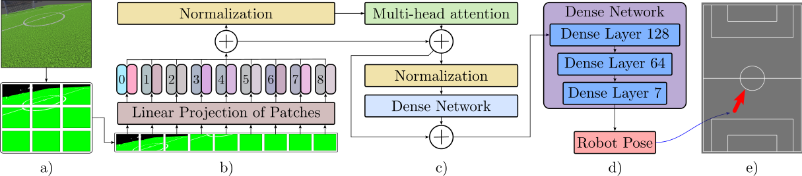

Accurate localization is essential for autonomous performance in humanoid robot soccer, where dynamic environments and partial observations challenge conventional methods. In this paper, we propose ViTHL (Vision Transformer-based Hybrid Localization), a novel localization framework that combines vision-based global estimation with probabilistic filtering to enhance robustness and accuracy. ViTHL utilizes a Vision Transformer (ViT) architecture to process images captured from the robot’s onboard camera and provide a global estimate of the robot’s position. These global observations are fused with kinematic and inertial data through a hybrid filtering scheme that combines an Unscented Kalman Filter (UKF) with a Monte Carlo Localization (MCL) process, which refines the estimate by accounting for motion uncertainty and sensor noise. The proposed method is validated in simulation on an OP3 humanoid robot using the Webots platform. Experimental results demonstrate that our approach outperforms traditional vision-based UKF and MCL methods in localization accuracy and convergence time. Furthermore, the system exhibits robust performance under partial occlusions and changing lighting conditions, which are common in RoboCup scenarios. Our findings highlight the effectiveness of combining deep learning-based perception with probabilistic filtering for real-time humanoid localization in complex, adversarial environments.
a) Overview of the Robotis OP3 Robot b) The image observed by the Robot c) Position prediction made by the ViT from the robot image d) Odometry Estimation e) Hybrid Localization Loop f) Obtaining the pose estimation of the robot in the field from the hybrid filter.
Input RGB frames (224×224) are split into 16×16 patches and projected to a token sequence. Six Transformer encoder blocks with multi‑head self‑attention learn global field context. The CLS token passes through a regression head that outputs a 7‑D pose vector (quaternion + XYZ).
Algorithm: Hybrid Localization Update Per Step
Require: Image It, Odometry ut, Previous state st-1
1: ŝt ← ViT_Predict(It)
2: s̄t ← MotionModel(st-1, ut)
3: if Confidence(ŝt) > τ then
4: st ← KalmanUpdate(s̄t, ŝt)
5: else
6: st ← MCLUpdate(s̄t, ŝt)
7: end if
8: return st
15k synthetic frames collected in Webots with domain randomization (lighting, textures, camera jitter). The ViT is trained with Adam (LR 1e‑4, batch 64, 100 epochs) minimizing SSE on 6‑DoF poses, then fine‑tuned on real footage.